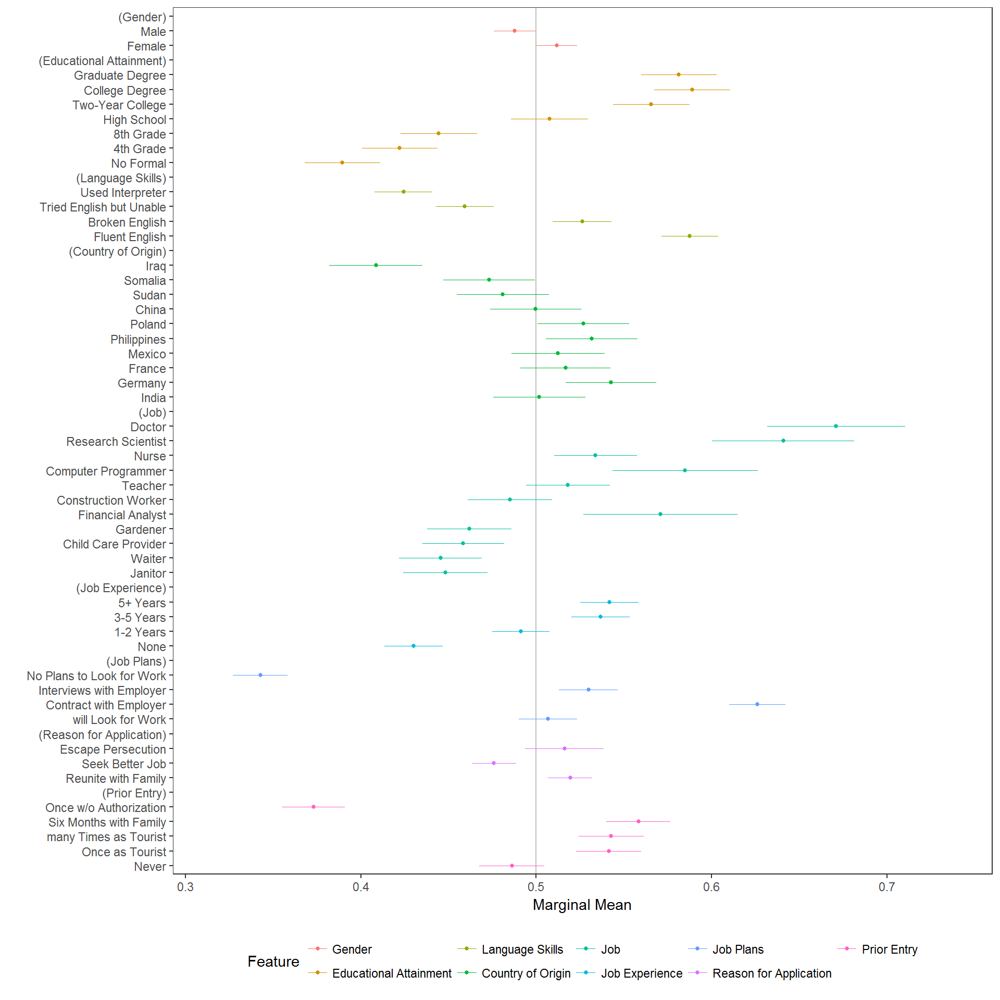
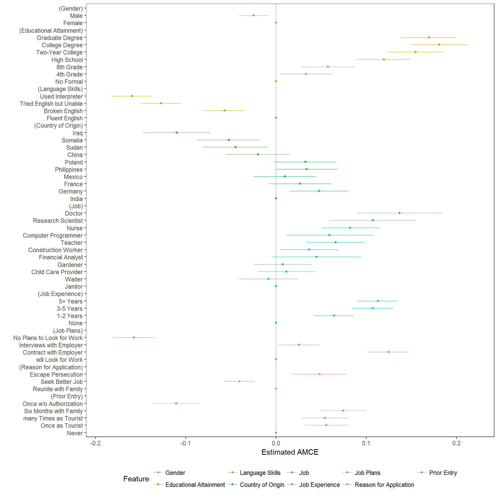

cregg is a package for analyzing and visualizing the results of conjoint (“cj”) factorial experiments. It provides functionality that is useful for analyzing and otherwise examining conjoint experimental data:
- Estimation of average marginal component effects (AMCEs) for fully randomized conjoint designs and munging of AMCE estimates into tidy data frames, via
amce() - Calculation of marginal means (MMs) for conjoint designs and munging them into tidy data frames via
mm() - Tabulation of display frequencies of feature attributes via
freqs()and cross-tabulation of feature restrictions usingprops() -
ggplot2-based visualizations of AMCEs and MMs, via
plot()methods for all of the above
The package takes its name from the surname of a famous White House Press Secretary.
The main selling point of cregg is simplicity of implementation and - unlike the cjoint package - cregg tries to follow tidy data principles throughout and provides a formula-based interface that meshes well with the underlying survey-based effect estimation API. Thus the response from any function is a tidy data frame that can easily be stacked with others (e.g., for computing AMCEs for subsets of respondents and then producing a facetted or grouped visualization). It also tries to take better advantage of data preprocessing steps by:
- Using factor base levels rather than trying to set baseline levels atomically
- Using “label” attributes on variables to provide pretty printing
Additionally all functions have arguments in data-formula order, making it simple to pipe into them via %>%.
Contributions and feedback are welcome on GitHub.
Code Examples
The package includes an example conjoint dataset (borrowed and lightly modified from the cjoint package), which is used here and and in examples:
library("cregg")
data("hainmueller")The package provides straightforward calculation and visualization of descriptive marginal means (MMs). These represent the mean outcome across all appearances of a particular conjoint feature level, averaging across all other features. In forced choice conjoint designs, MMs by definition average 0.5 with values above 0.5 indicating features that increase profile favorability and values below 0.5 indicating features that decrease profile favorability. For continuous outcomes, AMMs can take any value in the full range of the outcome. Calculation of MMs entail no modelling assumptions are simply descriptive quantities of interest:
# descriptive plotting
f1 <- ChosenImmigrant ~ Gender + Education + LanguageSkills + CountryOfOrigin + Job + JobExperience + JobPlans + ReasonForApplication +
PriorEntry
plot(mm(hainmueller, f1, id = ~CaseID), vline = 0.5)
cregg functions uses attr(data$feature, "label") to provide pretty printing of feature labels, so that varible names can be arbitrary. These can be overwritten using the feature_labels argument to override these settings. Feature levels are always deduced from the levels() of righthand-side variables in the model specification. All variables should be factors with levels in desired display order. Similarly, the plotted order of features is given by the order of terms in the RHS formula unless overridden by the order of variable names given in feature_order.
A more common analytic approach for conjoints is to estimate average marginal component effects (AMCEs) using some form of regression analysis. cregg uses glm() and svyglm() to perform estimation and margins to generate average marginal effect estimates. Designs can be specified with any interactions between conjoint features but only AMCEs are returned. (No functionality is provided at the moment for explict estimation of feature interaction effects.) Just like for amm(), the output of cj() (or its alias, amce()) is a tidy data frame:
# estimation
amces <- cj(hainmueller, f1, id = ~CaseID)
head(amces[c("feature", "level", "estimate", "std.error")], 20L) feature level estimate std.error
1 Gender Female 0.000000000 NA
2 Gender Male -0.024978435 0.007983009
3 Educational Attainment No Formal 0.000000000 NA
4 Educational Attainment 4th Grade 0.033367996 0.014971357
5 Educational Attainment 8th Grade 0.057600734 0.015021063
6 Educational Attainment High School 0.119492095 0.015118761
7 Educational Attainment Two-Year College 0.154588453 0.015840268
8 Educational Attainment College Degree 0.180948898 0.016183493
9 Educational Attainment Graduate Degree 0.169440741 0.015809304
10 Language Skills Fluent English 0.000000000 NA
11 Language Skills Broken English -0.056822717 0.011265303
12 Language Skills Tried English but Unable -0.127357585 0.011321142
13 Language Skills Used Interpreter -0.159808492 0.011553933
14 Country of Origin India 0.000000000 NA
15 Country of Origin Germany 0.047646243 0.016667948
16 Country of Origin France 0.026564521 0.017327948
17 Country of Origin Mexico 0.009818758 0.017530373
18 Country of Origin Philippines 0.034102011 0.017412416
19 Country of Origin Poland 0.032666819 0.017640451
20 Country of Origin China -0.020128816 0.017843819This makes it very easy to modify, combine, print, etc. the resulting output. It also makes it easy to visualize using ggplot2. A convenience visualization function is provided:
# plotting of AMCEs
plot(amces)
The package also provide a useful function for checking display frequencies of conjoint features (to ensure equal - or unequal - display frequency):
# plotting of display frequencies
plot(freqs(hainmueller, f1, id = ~CaseID))
As can be clear in the above, constraints were imposed in the original study on the allowed combinations of Job and Education and also on combinations of CountryOfOrigin and ReasonForApplication. The props() function provides tidy proportions tables to quickly
subset(props(hainmueller, ~Job + Education, id = ~CaseID), Proportion == 0) Job Education Proportion
5 Financial Analyst No Formal 0
8 Computer Programmer No Formal 0
10 Research Scientist No Formal 0
11 Doctor No Formal 0
16 Financial Analyst 4th Grade 0
19 Computer Programmer 4th Grade 0
21 Research Scientist 4th Grade 0
22 Doctor 4th Grade 0
27 Financial Analyst 8th Grade 0
30 Computer Programmer 8th Grade 0
32 Research Scientist 8th Grade 0
33 Doctor 8th Grade 0
38 Financial Analyst High School 0
41 Computer Programmer High School 0
43 Research Scientist High School 0
44 Doctor High School 0subset(props(hainmueller, ~CountryOfOrigin + ReasonForApplication, id = ~CaseID), Proportion == 0) CountryOfOrigin ReasonForApplication Proportion
21 India Escape Persecution 0
22 Germany Escape Persecution 0
23 France Escape Persecution 0
24 Mexico Escape Persecution 0
25 Philippines Escape Persecution 0
26 Poland Escape Persecution 0Installation


This package is not yet on CRAN. To install the latest development version you can pull a potentially unstable version directly from GitHub:
if (!require("ghit")) {
install.packages("ghit")
}
ghit::install_github("leeper/cregg")